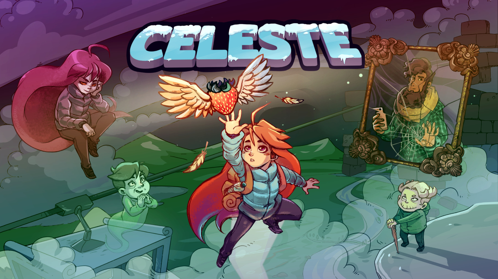

I hate people that think they’re some diabetes experts after reading 3 articles online. An acquaintance just told me that T2 is reversible. I won’t have this discussion with him. I need to stay calm… 🤦♂️ 😡
My little penguin is sick again. This time she has a nasty mouth infection - she coughs, her throat surely hurts like hell and she has some fever. We’ve seen the doctor today and I’ll be staying home with her until the end of the week. I hate when she’s sick… 😔
Finally managed to find a place for our summer holiday. It’s not what we wished for, but at least we’ll be next to a lake and we’ll have a few nice attractions around the house. The important thing is to have a great time ☀️🕶⛱
📖 I started reading Tenkuu Shinpan (High-Rise Invasion). I’ve already finished the first 2 volumes and I really love it. I want to first read the manga and then watch the anime (Netflix).


📺 Steve Carell left “The Office” in season 7. I had no idea. I watched yesterday his last episode. I’m sad and I wonder if the quality of the 2 last seasons will drop… 😢


19h15, 35°C outside 🌡🔥🌞
We just finished watching “Frozen 2” 🎬.
I would love to be able to make some ice just like Elsa 😂🧊🧊🧊🤘.

❓✅ Searching for a simple todo app (mac+ios). I feel all of the current apps are offering too many options. I only need to have lists or tags and some day/week view. No subtasks / attachments / comments. Nothing. I’m searching for the org-mode & todo.txt baby that they never had.
🎮 “Celeste” for Nintendo Switch is currently 4,99€ instead of 19,99€ so I bought it. One more game was added to the collection 🎉 - now I just have to find the time to play!

I haven’t slept well for 3 or 4 days - at first, my little penguin was sick and kept coughing. Last night she slept like a little angel, but I didn’t 🤦♂️. I’m so tired…
💣 I’ve started my morning with a bomb alert on my way to work. Had to walk and then wait for the Bomb Squad to detonate the suspected package…
I have to stop drinking Coca-Cola
I think I’m becoming addicted to Coca-Cola 🙀🥤
Lately, I’ve started to drink more and more and today, after buying 2 new bottles, I’ve realized that this may become a problem. If it’s not already…
So I gotta stop this. It’s not good for me. And I should start taking better care of myself and my body…


📺 The Office
I’ve started watching “The Office” (US version) just because at one time I couldn’t use Netflix and I was on Amazon Prime Video searching for something funny to watch.
I heard about the show but never tried to see it before.
Well, I think I can say that I’m obsessed with it 😂.
I don’t remember exactly when I started to watch it, but I’m already at the half of season 5 🙈.
I highly recommend it 👍 📺

reStart
In february I’ve decided to take a break. Stop posting here, stop checking the feed.
It wasn’t you, it was me 😝.
Now I reactivated my micro.blog account and I hope I’ll be back at posting different stuff.
So, here we are again… RE-Hello 👋
Shit!!! Apparently, Ukrainian control over the Chernobyl site was lost 😳😳😳. I have to stop watching the news…
Ugh. Awful development. "After a fierce battle, Ukrainian control over the Chernobyl site was lost. The condition of the former Chernobyl nuclear power plant, confinement, and nuclear waste storage facilities is unknown," said Mykhailo Podoliak, adviser to head of Chernobyl plant
— Christopher Miller (@ChristopherJM) February 24, 2022
🦠 It’s weird I haven’t got Covid yet… Or maybe I’ve had it and I just didn’t have any symptoms. I don’t complain, I’m really happy about it and I hope I’ll stay this way 😄


Here we go again... test, test, and again, test.
Someone in my little penguin’s class has Covid.
It’s the 3rd time in 4 weeks that we have to do 3 auto-tests on her.
It sucks…
But the thing that annoys me the most is that I’m sure some parents don’t even bother to do a test, and they send the kid to school… Because, hey, no one checks.
School staff is not allowed - you only bring a paper saying “yeah, I did test my child, he’s negative, and I swear I’ll also test it in 2 days and 4 days and I won’t bring him to school if he’s positive”.
I don’t get why there isn’t a different type of test for 3 years old…
Is RSS import working for everyone else? I don’t see my micro.blog posts in the timeline (happened again with my 2 latest posts, but I do see my answers) and I don’t see external RSS posts either (that I post on other services)… It’s a shame, I’ve seen it happening for some days, randomly.


Little penguin told me yesterday: « papa, je n’ai jamais fait un bonhomme de neige » (dad, I never made a snowman)
So… hey, snow! Get here ASAP, I really need to do a snowman!!! ⛄ 🐧


Weekdays at 7am: “come on baby, wake up. we have to go to school” / “no!!! no!!! I wanna sleep more. go away!!!”.
Weekend at 6:45am: “mom, dad, I wanna play!!!!!!!!!”.
Yeeeeey 🎉🎉🎉


Currently reading: Digital Minimalism: Choosing a Focused Life in a Noisy World by Cal Newport 📚
I really need to clean my podcasts subscriptions. It’s a mess and full of items I don’t follow anymore. I will have to do it this week… Added to my to-do list ✅
New year - New me
I say this every year.
Let’s start with the 5 things I’ve said I’ll do in 2021 and see if I did them or not :
🟢 Read 12 books or more (1 book/month)
Well, I can say I did this even if they weren’t books, but BD/mangas. But hey, at least I’ve read something else than Reddit 😝.
🟠 Take better care of myself
I’ve started the year by doing it pretty well. Then I’ve had some moments when I forgot or “lost interest”. And the end of the year was the worst. Shame on me.
🟠 Really lose some weight
Well, I lost 2kg. Not a lot, but at least I’ve lost something…
🔴 Track my mood on a daily basis
Started the year by doing it, but it was too difficult to do it on a daily basis. So I abandoned the idea. Another thing I don’t get to do. F%%k.
🔴 Write more (on the blog)
This also… I’ve added some things here, I canceled my micro.blog subscription at some point and then I came back. So, this was also a fail.
Ok, so how about this year? 2022?
Honestly, I don’t even want to try to make a lot of things to do ‘cause I know that stupid old me won’t do it.
So I’ll only hope that my health will improve and that I’ll try better to take care of myself. If not for me, at least for my family, so I can be with them the longest time possible.
This reminds me of a life expectancy calculator I’ve found online a few months ago. It scared me.

It’s just a number given by a website, I know, but still… it makes you think about how you live your life.
So hey, let’s hope 2022 will be better than 2021 and worse than 2023. And I’ll try to be the best me I can be. A new year, a new me, right?
Cheers…


💸 2022 : my subscriptions (apps/services)
Maique did a list of his subscriptions and I told myself this is a good chance to take a look at my current subscriptions. Besides, it’s a good way to do some start of the year cleaning maybe…
I did cancel some of my subscriptions a few months ago, but let’s see what managed to stay from the last cleanup 😄.
SetApp
🤑 Pricing : 9,99 $ / month

The all-in-one service, the Netflix for Mac apps. If you don’t know it yet, take a look, and maybe you’ll like what you see 😉 (referral link).
YNAB
🤑 Pricing : 98,99 $ / year

If you know YNAB, you surely know about the price change they did in late 2021. They raised the prices for everyone, but the biggest hit was for the old customers that were on a 50$ subscription (I was one of them). For us, the price doubled.
The problem is I did not find a good alternative, so I’ll stick to them even if I did not appreciate this price change. But hey, the app managed to become a habit and now I have difficulties replacing it with something else.
Netflix
🤑 Pricing : 13,49 € / month

Well, no explanation is needed, right? Everyone knows Netflix 😝
Micro.blog
🤑 Pricing : 5,00 $ / month
You’re reading this here, on micro.blog so this is why I’m using this, right?
To be honest, I have moments when I want to cancel my subscription, but then I change my mind, then the thought comes again, and I again change my mind, etc…
But for now, I am here - I have found a pretty nice community here, and I think that’s the main reason I continue to stick with micro.blog.
Day One
🤑 Pricing : 2,99 € / month
🔗 URL : https://dayoneapp.com/

This is also I subscription I wanted to cancel multiple times, but I always stick with it because it’s a great app and the « On this day » feature is priceless. And honestly, I can put everything there - images, videos, thoughts, etc…
I have the personal journals (since 2011) and some other journals where I add different things.
For example:
- I have all my microBlog posts automatically imported in a specific journal
- I have all my old Instagram photos imported here in a journal
- This year I’ve started a 1photo1day journal since January 1st
Google One
🤑 Pricing : 2,99 € / month
I use Google Photos, but as I take a lot of photos (90% of my daughter + every stupid thing I find interesting) my free space has been used. So I took the 200GB subscription 🤷♂️
Bearable
🤑 Pricing : 17,49 € / year
🔗 URL : https://bearable.app/

Quantified Self - I try to track different aspects of my life. I keep switching from Nomie to Bearable and back. I’m still undecided. I love Nomie, but I find Bearable way quicker to use. I don’t know why…
For now, I’m using more Bearable than Nomie. But Nomie 6 is in development and maybe I will switch (again).
Bear
🤑 Pricing : 15,99 € / year
🔗 URL : https://bear.app/

I love Bear, but I don’t use it lately. I’m in the process of choosing the app for storing all my notes 🤦♂️.
The only problem with Bear is how slow the dev process is. New features take a lot of time to see the light. Dommage..
Letterboxd
🤑 Pricing : 10,00 $ / year (special price, each Black Friday)
🔗 URL : https://letterboxd.com/
I like the service, the look and feel, and, most of all, I like their stats.
NextDNS
🤑 Pricing : 19,90 € / year
🔗 URL : https://nextdns.io/
A must-have for blocking ads on all my devices. The internet is full of ads and trackers. NextDNS helps avoid them 😉
Amazon Prime
🤑 Pricing : 49,00 € / year
I order a lot on Amazon. So for me Prime is mandatory. I do not use Prime Video or their cloud storage, but… maybe one day 😝
Spotify
🤑 Pricing : 15,99 € / month (family plan)
I’ve used Spotify for years. I never thought of switching to Apple Music / Deezer.
Subscriptions I will 100% cancel
This list contains subscriptions I’m currently having, but that I will cancel « at the end of the cycle ».
DEVONthink mobile
🤑 Pricing : 16,49 € / year
Well, I did the error of buying DEVONthink and I also got the mobile app to be able to send files from my iPhone. I’ll cancel for sure…
Gyrosco.pe
🤑 Pricing : 35,99 € / year
🔗 URL : https://gyrosco.pe/
🚫 Expires : 12/11/2022
Build a better version of yourself by tracking what are you doing. A way much expensive version of Exist.io. Not for me… You’re paying for the nice design, but it’s too much in my opinion.
Craft
🤑 Pricing : 44,99 € / year
🔗 URL : https://www.craft.do/
🚫 Expires : 06/07/2022
It was the new kid on the block, I subscribed, but the app it’s just too much compared to what I need… It’s a nice app, but it’s not for me I think.
LifeCycle
🤑 Pricing : 10,49 € / year
🔗 URL : https://northcube.com/lifecycle/
🚫 Expires : 30/01/2022
An app that tracks all the places you’re visiting. Nice if you want to keep a log of places you’ve visited.
YAZIO
🤑 Pricing : 22,49 € / monthyear
🔗 URL : https://www.yazio.com/
🚫 Expires : 25/03/2022
I’ve used 5 times this app I think. I don’t know what I was thinking when I subscribed 😢. It was one of those moments when I’ve said to myself - tomorrow I’ll start eating healthier, track everything and stop being a fat ass. Didn’t work…
Money lost _(for me)_…
Subscriptions I had and that were canceled
Here’s a small list of different apps/services I used in the past :
- Daylio
- Drafts (oops)
- Apple Arcade (got no time for playing too many games)
- Strides
- Paste
- RECaf
- Raindrop.io
☕ Did you like this post? You can buy me a coffee ☕

Away...
I’ve been inactive around here in the last few weeks. As my parents were at our place for 3 weeks, I preferred to disconnect a little bit and spend time with them.
Now, they have a few more days and they’ll go back. I’m sad, but I’m glad I spent a lot of time with them.

I’m terrified. I’ve seen a big spider in my living room, between the window and the shutters. So, on the outside. But I’m shaking. For real. I hate being so freaking afraid of spiders. I really have to do something about it, I cannot continue like this………


I shouldn’t have taken a nap! Now I’m all sleepy and I do not want to do anything for the rest of the day. I have to make myself a cup of coffee ☕


💬 I was writing an angry post to publish here on microBlog and my Mac freezed. Today it’s going to be a long day I guess…
As I am sick for a few days now and it seems it will never get better, I got tested for Covid. I’m negative. This is such a relief… 😷
Happy Great Union Day, Romania!

On this day in 1918, more than 100,000 Romanians gathered from across the region in Alba Iulia to witness a vote by the Great Assembly, which united Transylvania, Crișana, Maramureș, and Banat with the Romanian Kingdom. This anniversary has been celebrated since 1990 as Unification Day, or Great Union Day — Romania’s national holiday.
In the city where unification was formalized, Alba Iulia traditionally serves as a key location for celebrations of the past and present along with the nation’s capital, Bucharest.
In Bucharest, and cities throughout the country, parades take place and numerous other cultural ceremonies are organized.
Happy Great Union Day, Romania!

💬 Great. The tram I was in stopped working. Now I have to walk to another line. I’ll be late for work. In moments like this you appreciate working from home way more than usual. 🤬
🎅 Christmas gifts ordered :
✅ My little penguin
✅ Momma penguin
✅ My parents
Such a good feeling knowing everything’s done.
AirBuddy has a Black Friday / Cyber Monday sale (50% OFF on checkout). Not bad. I have the app and I highly recommend it : https://v2.airbuddy.app/
My little penguin is still sick. Still feverish. Still coughing. Oh, how I hate seeing her like this 😢
Starting yesterday, I’m now also a member of the omg.lol family…


💬 I’ve tried adding some mangas on my Kindle. Damn, I’m too old and my eyes are not as they used to be 🤣. I’ll stick with my iPad or with the paper version 🤷♂️
I currently feel like my head will explode 🤯. I think I’m getting sick (again). Little penguin had a fever last night and this morning so I guess that’s why now I also feel like this. Luckily I work from home today, but I cannot wait for this day to be done.
Will Letterboxd have a Black Friday sale this year? My PRO subscription expires tomorrow, but I guess I’ll wait until Friday / Monday to see if they’ll have an offer or something 🤔

Ok, I did it, I’ve subscribed to NextDNS (referral link). I liked the way it worked while using the free plan and decided to subscribe. I don’t have the time to play with piHole and NextDNS it’s just 19.90 € per year. I highly recommend it ✌(-‿-)✌
Wear your mask and stop being an ass...
💬 I don’t get the people that don’t wear the mask as they should.
Why the hell are you doing this? Are you feeling superior by being the only one without a mask on your face? Or with the mask on the face, but under your nose? Or with it under your chin?
Each day I use public transport and I see people like this. Idiots!!!
You’re the reason this covid shit seems to never end…
Even if you do not believe in covid, vaccines, masks, or whatever, at least have the common sense to wear it as you should to protect those around you.
Bref… 😒

Last night sleep 🤦🏻♂️👻. Our daughter decided she won’t sleep anymore and asked us to take her to our bed. The only problem was that she still didn’t sleep and neither did us. So today I’m KO 😴…

Ok, I really like how you can create custom actions in Drafts. My first action is almost ready and I’ll share it as soon as I’m sure it is working as it should. Maybe someone else will be interested 🎉

Hey, micro.Parents - any suggestions for movies to watch with my 3yo? For now, we only watched “The Smurfs” together (two times). She also watched like half of “Aristocats”. We try limiting TV time as much as we can, but on the weekend we would like to start some kind of tradition for an evening family movie time 📺.

Who am I ?!?
Hello, I am podiboq.
Some of you already interacted with me, some of you maybe will interact in the future…
I know that I keep myself in the shadows, that I don’t put my real name or any personal details out there like all of you guys are doing, but that’s because I did this all my life and now I’m regretting it.
No, nothing bad happened to me, but I stopped writing online or adding images because I was always saying to myself ”…but what if X or Y sees this” / “what if X or Y will think it’s about him/her” / “what if I’ll be treated differently because of this?” / “what if… what if… what if…”. And I’ve started censoring myself more and more. Until one day when I’ve stopped putting anything online.
So I’ve created “podiboq” a few years ago and decided to only show the real me when I will feel 100% safe.
And here on micro.blog is the first time since that I’ve put some personal stuff and personal images of my environment or my daughter (even if her face is never visible).
I’ve never thought of doing this a few years ago…
I know that it’s hard to interact with someone that doesn’t have a face or a real name. But here I found some people that ignored all that and replied to my posts or answered my comments.
I felt integrated into the life of a few persons without “having to show my ID”. And this is something special for me.
Maybe later I will regain the courage to stop hiding and show myself. But, until there, thank you kind strangers for taking time and interacting with this unknown person.
Hello, I am podiboq.
📷 Each Saturday morning this is what me and my little penguin are doing 👨👧. Baby gym. She loves running and jumping all around, so this activity is perfect for her.

Drafts + micro.blog
Ok, I’ve reinstalled Drafts, checked some videos about it and now I’m posting my first message on my blog directly from Drafts.
Drafts can be a solution, allowing me to take my time when publishing something, or by simply adding here some ideas I’m having and publish them later.
I’ll see after few tests if I’m going to stick to it or no 😄
🍿 Move to Heaven

I’ve just finished watching “Move to Heaven”.
I’ve started watching it without knowing what the story is. I don’t regret it.
It’s a beautiful story with a beautiful ending.
If you’re searching for a show that will make you sad and happy in the same time, watch “Move to Heave,”. You won’t regret it… 🥰
Now, the question is… will we have a second season ?


Journaling

I don’t have a good memory. So, in order to be sure that I remember things, I write them down.
I’ve tried the Bullet Journal method (that I find amazing) on a physical journal multiple times, but I never manage to stick to it because :
- I don’t like my writing (I wish I’ve had a beautiful writing)
- I’m moving a lot of stuff around and I miss the digital cut & paste
- I’m afraid I’ll want to add something in it and I will not have it next to me in that specific moment (stupid, no?)
I am currently journaling in the Day One app. My first entry is from 2013. But even for this digital journal, there are days when I write in it and there are days that I completely forget…
So yesterday I’ve started something new. I’ve started a simple journal called “Logbook”. I’ve heard about it before, so I’ll try implementing it to see how it goes.
The idea is that every night or every morning I’ll write some things that happened this day or the day before. Nothing fancy, just short phrases resuming the main events of that day.
And then, if I have something more to say about a special event or a thing that happened to me, I’ll write in my dedicated yearly journal 👍.
Let’s see how this goes…
Photo by lilartsy


📷 Yesterday I reactivated my Gyroscope subscription. I’ll try using it more this next year and see if I can learn some things about myself and my body.


📚 Libib - catalog your books
I’ve seen many people talk about GoodReads, Literal and other similar services. But I think it’s a shame no one talks about Libib.
It’s true, it’s a static library organizer and it doesn’t have social features (recommandations, reviews, etc), but I simply love it ツ. It allows me to keep track of the books I have, those I’ve read and those I want to buy in the future.
And everything is free. They also have a pro version, but it’s something built for library managers.
Besides, using Libib you can catalog your books, movies, music and game collections. I only use it for books for now, but it’s good to know…
For now I have a few private libraries and two public libraries to have my wishlist available for friends and family 📚.


📷 J’adore cette phrase : “la plupart des religieux vont t’éloigner de Dieu”, même si je ne suis pas du tout croyant.
“Mon roi” - Youssoupha


📷 🦠 Europe Is Once Again At The Epicenter Of The Pandemic 🤦♂️ (source)

Positive Covid case at my partner’s place of work. In her team 🤦♂️. I really hope she wasn’t infected. We’ll see this in the next few days 🤞. Normally it should be ok as everyone was wearing a mask all day long, but you never know…
🎥 HOPE - I wasn't ready for this 😢

Few days ago I found out about a movie called “Hope”. It’s a South Korean movie, inspired by a true story.
I knew it will be sad, but I wasn’t ready for this.
Here’s the synopsis of the movie :
WE WON’T LET HER SHED TEARS AGAIN
After 8-year-old So-won narrowly survives a brutal sexual assault, her family labors to help her heal while coping with their own rage and grief.
Well, this movie made me shiver and bringed (a lot of) tears in my eyes. Multiple times…
The story is a terrible one, but having a daughter myself made me feel it way deeper I think.
I couldn’t stopped myself from thinking about my little penguin during all the movie. The story scared me and it infuriated me terribly. What happened to that little girl was… awful…
I thought a lot about the father. It’s a horrible feeling to have your daughter be scared of you, of your simple presence. Each time I saw him with that Kokomong costume bringed tears in my eyes.

And the car trip back home… Pffff… Such a sad scene…

The way the little girl talked after the incident with the psy, the way her little friends behaved, the relationship between the parents, the friendships between the characters, the support of the community and so on…
I loved everything about this movie, even thought it made me so, so sad…


It’s a shame Halloween is not realy celebrated here in my area. I would like to do some crazy disguises once a year 🎃


Our trip is over now. I’ll miss the nature, the beautiful landscapes and the fresh air. Let’s go home now… 🚙


📷 Today we went to a walk around the area. It’s lovely around here. I would like to have a place here in the mountains. It really was a beautiful morning with my lovely family.


📷 Testing “Halide” app. Not bad. It really has a good pack of features… (too bad I didn’t centered the subject correctly).


RIP Gunther 😢
RIP James Michael Tyler aka “Gunther”.
“Friends” is my all-time favorite TV show. I’ve watched it more than 10 times (not kidding).
The characters allowed me to smile almost every time and to get up if I ever was down.
In “The reunion” Gunther appeared for a few minutes. These were his last minutes with the “Friends”… It’s a shame…


My little penguin has chickenpox. It’s the 3rd day… I can’t wait for it to pass. It’s difficult for a 3yo to understand why scratching is not a good thing to do.
I’m tired. I feel like I’m always starting 8 things, quitting 5 and forgetting about the other 3. I hate this… I need a break. I want to drink a hot coffee in the morning, looking at the mountains and listening a river. Or the birds…
Apple Event 2021 (my thoughts)
👨🏻💻 Here are some of my thoughts about the new products announced at today’s Apple Event :
New iPad
Nice and the price is a great one ($329 for the 64Gb version)

New iPad mini
It’s a good upgrade, but it’s not for me…

New Apple Watch (Series 7)
Oh, come on… Why upgrade? Really?

I won’t 🤣 I have a Series 5 and none of the features made me say : “yes, I want this…”. Maybe that’s me, but hey…
New iPhones : 13 / 13 mini / 13 Pro

Well, I wanted an upgrade from my iPhone SE 2020, so I think an iPhone 13 or the iPhone 13 mini might be a good choice (at $699 for the mini version and $799 for the “classic” version at 128GB - I think…).
But, I’ll wait a little bit to see some reviews, mainly to see if it’s better to choose an iPhone 12 or the new iPhone 13 👍.
The iPhone 13 Pro it’s surely better, but I don’t know if for my usage it’s worth the price difference ¯(°_o)/¯. $999 vs $699/$799.
Conclusion
I cannot say the announces were WOW.
I expected something more exciting. I don’t know why… I don’t know what exactly 🤷♂️.
Announcing that the iPad will come with iPad OS 15 that allows you to add widgets for me it’s not the information to present here. We already knew this 😄.
But the Apple Watch Series 7 was the biggest disappointment. Really. I don’t know what I was expecting, but… not this anyway.


Here we go...
My little penguin is starting to be sick.
It’s only been 4 days of school and it’s already starting the “always sick” season 😂😂😂
Tomorrow I wanted to have a ME-day a day when I stay in bed and watch movies and TV series all day long.
It seems I won’t get this. I think tomorrow I’ll be babysitting my little sick penguin 🐧.
Well, c’est la vie 🤷♂️

I'm back 🤟
I’ve decided a few months ago to take a break from posting here.
But I quickly realized that I’d rather use micro.blog for my thoughts / my photos than other platforms that are going to save everything about me.
And, besides that, I really missed this community. I don’t “know” a lot of people around here, but the interactions I had were always interesting. And what other people were posting was real and not fake as it is on other platforms where everyone only shows the “perfect” side of their lives, even if it’s a big fat lie.
Anyway, I’m back, and I’m glad to be here…
Hello micro.blog !!! Hello micro.bloggers 👋 👋 👋


🔗 Are there spiders ? - here’s a way to know if there are spiders in a movie. I’m afraid of spiders so I think I’ll check this from now on 👍
💬 Tried watching WWDC 2021 on my Mac with my Airpods Pro. After they disconnected 4 -5 times I threw them away and took another pair of headphones. Thank you Apple 🤦♂️
What VPN are you using? I’ve seen that with my SetApp subscription I have ClearVPN, but I have no idea if is good. Online I’ve seen recommendations for : Nord VPN, Proton VPN or Windscribe. Any suggestions from the micro.blog users ? 😛

📷 This is a carpet alarm clock which won’t stop until you step on it.
Brilliant. I want one 👏👏👏
Seen on Reddit

🔗 Papercraft models
Papercraft models : Construct the computer from your childhood or build an entire computer museum at home with these paper models, free to download and share. Print, Cut, Score, Fold and Glue.


… not bad 👍
WWDC 2021 - some infos and a video concept
WWDC2021 is the event all Apple fans are waiting for.
Personally, I would love to see more love given to Apple Notes, but I’m pretty sure Apple doesn’t give a damn about this app 😢.
Apparently the main focus will be on iMessages. Well that’s a shame (at least for me) - I only use it with one or two persons. Rest of the time : Signal…
Anyway, around Twitter here are what people are talking about :
iOS 15 summary:
— LeaksApplePro (@LeaksApplePro) June 1, 2021
-Disappointment is my subjective thought.
-No new icons.
-Customize notifications.
-Performance and battery focused.
-Slightly modified UI, nothing crazy.
-Food tracking.
-Privacy and security focused.
-Starting from iPhone 7.
-Possibly a modified control center.
iPadOS 15:
— LeaksApplePro (@LeaksApplePro) June 1, 2021
-Home screen is getting a lot of improvements.
-FCP, LPX and xCode are coming(can’t confirm it will be at WWDC but it’s happening.).
-Privacy and security.
-Battery improvements.
-Same notifications as iOS 15.
-The update iPadOS has been waiting for the past 2 years.
Apple is going to focus on making iMessage a real competitor to the to WhatsApp and Facebook messenger. iMessage will be a social network.
— Chris Grant Jr. (GG) (@chrisgrantjr) June 2, 2021
While waiting for WWDC 2021 you can take a look at the list of 2021 Apple Design Award Finalists
One more thing…
Here’s a nice iOS 15 concept video made by Nicholas Ghigo


Why are you not sleeping? 👶
My little one (2,5yo) doesn’t want to sleep alone.
She had a period when we only stayed like 5 minutes with her after reading a story and turning off the lights and then she managed to feel asleep all alone.
But now if we leave the room she screams and cries. Or we have to tell her that we’ll take her pacifier for her to calm down and fall asleep.
Any parenting tip(s) ? 🙈

Be a parent, not a dick 🖕
I hate the parents that don’t say anything to their kids and leave them doing anything they want.
I was in a park with my little one and a dad was with his 2 sons. 1-2 years bigger I think.
Last few days it rained a lot, but he let them walk on the slide with their wet and dirty shoes. He said nothing. I had to clean it before my little one used it.
Next, one of the boys was on top of the slide not letting my little girl go up. I had to tell him to move because his dad was just looking. What a moron 🤬.
Last drop : when they we’re leaving the other kid came to the slide when my girl was preparing to use it and started pulling her shoes. And just like before I had to tell at him to stop because his dad said nothing. 🤯
**What the fuck dude? **
With parents like this, I’m afraid of how the kids will grow up.
I’m sick and tired of parents that do not educate their kids. 🖕🖕🖕
👨🏻💻 What app(s) are you using for notes / to-dos for your daily tasks (personal / home / family)? I’m mostly interested in the “personal management” rather than managing projects and some other advanced usages…


Ulysses + Micro.blog = perfect match
Today I found out that Micro.blog has a support forum.
On the forum I’ve seen that I can write my articles in Ulysses and publish them on my Micro.blog.

Hey, that’s two good news in less than an hour 😀
Great start for this weekend 🎉
The Covid-19 vaccine, the French system and the liers
“The French way” for vaccinating people is so fucking stupid.
Starting last Saturday they said that people between 18 and 54 years old can get a vaccine only if they have comorbidities.
Seems legit, right?
The only problem is that when going to the vaccination center you don’t have to prove it, but only say it. So a lot of people (a loooot) got the vaccine just by lying that they have a comorbidity.
Got an acquaintance who did THIS. The guy is in good shape and good health, but he didn’t want to wait… And, besides that, few months ago he was even mocking all the covid situation.
So because of this type of idiots myself and other people that we have a real disease cannot get vaccinated right away because we cannot find a spot.
Everything’s taken and the next time slot available is in July. 2 month from now…
Well, I really hope that they’ll open extra slots because I would really like to get vaccinated - it will make me stress less, that’s for sure.
A big thank you to our leaders 🇫🇷🖕
I’m so furious right now

🔗 Stumbled - The greatest Sites of the Internet
Years ago I would spend hours on StumbleUpon - it seems that this website is based on the same principle - discovering interesting pages around the internet… Well, this is not going to be a good thing for my productivity 🙈

Normally, starting today I qualify for the vaccine. Well… it seems that’s only available in theory, because in the “real world” the dates are far far away or the vaccination centers are not accepting people under 50/60 yo. Pfffffff 👻


👻 Keep walking

My blood sugar was too high in the last few days.
Being inactive plays a big role.
So yesterday I’ve started walking during the day.
I felt ashamed this morning when I woke up with a mild muscle soreness. From walking 🤦🏻♂️. Only walking…
But hey, the important thing is to try doing it each day and, most important, to lower my blood sugar levels and take care of my diabetes 🦸♂️
I don’t like this, this got to change :

Are we going to have a lockdown on weekends ?
💬 Apparently tonight the prime minister will make some announcements. I think we’ll have a weekend lockdown 😢
— LATER EDIT —
Hmmm… no big news today 😄


🗯 I want to buy DEVONthink but I don’t know if I should choose the classic or the PRO version… Hard to decide 😑


I've moved my life to Bear 🐻
I’ve used a lot of tools in the last years, but I’ve never managed to dedicate myself to a particular one. I’ve tried almost all the well-known ones : Evernote, Notion, Airtable, Apple Notes, NotePlan, …
Lately I’ve decided to play a bit more with Bear. I had the yearly subscription for almost 3 years, and I’ve been used it from time to time to keep some quick notes.
I’ve now decided to move almost everything there : - my weekly/daily agenda (a mini-bullet journal) - my poetry - my notes - things I find online and so on
I find it hard for the daily tasks and for now I’m using a mix of Bear / Things 3 / Apple Reminders. I have to fix this.
What I like about Bear is the editor. It really makes you love the time spent writing inside the notes. It’s crazy.

I’ve tried last weekend to put the same notes in Bear and another app and… it was not the same feeling :)
The only question now is : will I keep this? Or will I change it again in a few months?
Got a cold 😷
I’m sick for more than 10 days now (cough, headache, running nose, lost my voice, … - no fever, no lost of smell, no fatigue so I guess it’s not Covid), so I guess I’ll go see the doctor tomorrow.
Each day I thought I’ll get better, but I feel like I’m getting worse and worse. Currently, I’m coughing a lot and I hate this…
I got to take care of myself and stop putting the job first. Last week I stayed at work because… I work from home and I have a lot of things to do. F–k it… Not anymore. My health is the #1 priority.
Go to the doctor podiboq 👻
💭 Muzica romaneasca s-a cam dus naibii… E pacat 😶
Ieri am incercat sa arunc o privire pe YouTube la ce piese au mai iesit si… am fost cam dezamagit. Ori am imbatranit eu, ori peisajul muzical romanesc este plin de fufe si panarame (atat masculine, cat si feminine). Este pacat…

🔗😳 Black Mirror’s episodes will quickly become reality : Microsoft patent an AI to revive your dead loved ones as chatbots
🔗 Facebook users’ phone numbers are for sale through a Telegram bot…
And I still have friends asking me why I’ve decided to quit Facebook and WhatsApp 😳


Time to say goodbye...

I’ve (almost) removed all of my Facebook posts. Got a few to go. But I’ll get soon to the point where everything was removed. Everything.
Afterwards I have to do the same for the photos… I still have a few photos there (fortunately I’ve rarely posted photos of myself).
I’ve found a semi-automatic way of removing posts, but I hate that Facebook doesn’t allow you to do this by default. Anyway…
If anyone’s curious here are the extensions (Chrome) that help me do this:
- Switch to Classic design on Facebook
- Social Book Post Manager
Be careful to not do this very fast. My account was almost blocked because of all the calls being made in a short time interval. So I really recommend you to wait a little before deleting posts from a different month :)
I will not remove my account because, unfortunatelly, I still have some people that are there and only there… But hey, at least I won’t have any info there (at least not public - on their server we’ll never know what they keep and what they delete).

📚 "L'arabe du futur" - Riad Sattouf
Some friends recommended me this comic book few weeks ago, and I just found out momma penguin had it. So I’ll start reading it these days 😎

🔗 PSX Party is a way to play PSX games with your friends in online multiplayer all from within your browser.


I'll Signal you something... 🤯
I’ve posted this in Romanian, but realized an English version would be better here on micro.blog…
So I’ve decided to leave WhatsApp behind and close my account. And I switched to Signal. I was already on Telegram, but Signal is way better from a privacy point of view…

I’ve tried convincing my friends and family. Some accepted, some didn’t. But, as I’ve said to them, we’re free to choose what we want in life.
Those who didn’t want to leave told me I was paranoid, that Facebook is not the bad guy, that they don’t care because they have nothing to hide, etc.
I know the current changes to the privacy policy weren’t really that important (we’re mostly clarifications actually) and that Facebook already has everything about me at this moment. I know this, and it’s easy to see it for yourself. Just export WhatsApp data, and you’ll see all the infos they have. But I don’t want to be their data milking cow anymore. My data is my data (and yeah, I know: if something it’s free, you’re the product).
Besides, Facebook is known for lying a lot and not just lately… this “bug” made me laugh, or if you have the time you can take a look at this timeline of some of Facebook’s privacy issues
I don’t want a future built on all the data that we freely and stupidly gave to all these companies. A future where they have all of our data, and they’ll be able to know what our next step will be. I don’t want this.
If I can take a step in a different direction I’ll do it. So this is what I’m doing now.
I don’t want my kids to be “sketched” with the help of the data I’ll leave behind. They need to be themselves. That’s why I never posted, and I’ll never be posting photos of my daughter online - her online identity must be build by herself and not by her parents.
Final note: Facebook is not the only bad guy here… they’re just one of them. The internet is ruled by GAFAM and they have the power. We gave it to them…
🇷🇴 Bye WhatsApp - Hello Signal

😳 You don’t understand Romanian? No problem: I’ve also written an english article on the same subject…
M-am saturat sa tot explic de ce am plecat de pe WhatsApp si de ce am trecut pe Signal.
Mereu aceleasi intrebari si aceleasi pareri de la cei ce iau la misto aceasta decizie si imi zic ca sunt paranoic: ca modificarile facute nu implica Europa, ca nimic nu se schimba de fapt, ca Facebook nu este baiatul rau, ca ei nu au nimic de ascuns, etc…
Nu imi pasa sincer. Decizia imi apartine si mi-o asum.
De ce?
Nu mai vreau sa fiu un produs. De ce sa aiba Facebook toate aceste informatii cand ei nu dau doi bani pe tot ce inseamna privacy? De ce sa stie ei tot? Nu, nu am secrete, dar - in acelasi timp - nu vreau ca viitorul sa fie un sir de evenimente provocate de tot ceea ce data mining-ul a recuperat de la noi. Nu vreau ca ai mei copii sa fie legati de mine si sa se poata analiza “trecutul” lor prin prisma tuturor datelor obtinute prin utilizarea produselor lor.
Daca pot face macar un mic pas inapoi, eu il voi face.
Stiu ca Facebook are deja toate informatiile de pana acum, dar macar voi impiedica preluarea informatiilor ce ma privesc de acum inainte. De ce sa aiba ei contactele mele pentru a putea afla traseul de la persoana X la persoana Y prin intermediul meu? De ce sa imi stie preocuparile bazandu-se pe grupurilor pe care sunt sau pe care le creez?
La Facebook am renuntat de mult timp, iar acum WhatsApp este doar etapa numarul #2. Urmeaza Instagram, doar ca acolo activitatea mea este extrem de redusa (practic inexistenta).
As renunta si la Google, dar partea asta este ceva mai dificila pentru moment… Insa sper sa fac si asta pe viitor.
In fine…
🔗🦠 Well, as I’ve already said… 2021 will not be a fun year : Japan finds new COVID virus strain, distinct from UK and Africa types

2021 - time to change some things

Here’s a list of things I’ll like to do in 2021.
I’ve already did something like this for 2019 and for 2020. It never worked. I never did the things I’ve said I’ll do.
This year I’m putting this list here. Not on a piece of paper that’ll get lost. And I really hope at the end of 2021 I can look back and replace the ⭕️ with ✅ instead of 🚫.
5 things that I want to do in 2021
⭕️ Read 12 books or more (1 book / month)
I have to read more. In 2020 I didn’t read too much and I don’t like it. Going to bed with the phone in front of the eyes must be removed from my routine. Got to replace it with reading.
ℹ️ Progress : 1. to be updated…
⭕️ Take better care of myself
2020 was a fucked up year, everyone knows this… If in the first half of the year I tried to walk at least few times a week and I was careful of what I was eating, in the second half everything was “forgotten”.
I need to get back on the tracks, I need to stop making exceptions when it comes to foods I’m not allowed to eat, I need to eat better and, most important, I need to move more and improve my blood sugar levels & my HbA1c.
There are good foods and bad foods for me. I have to learn to accept that if a food is not good for my health, I really should limit it or even remove it completely. I need to really re-take my health issues seriously.
⭕️ Really lose some weight
It’s been like 2-3 years since I’m saying this, but never manage to do it… This year something has to change.
ℹ️ Start weight : 98kg 🙈
⭕️ Track my mood on a daily basis
This year I managed to track my mood for a big part of the year. In 2021 I’ll like to keep an eye on my mood to better see how am I feeling on a daily basis and what are the factors that impact my mood.
⭕️ Write more (on the blog)
I have to write more here. I think for now I force myself to write only in english, but that’s not good, because I can loose some important thoughts because I do not know or don’t manage to put them in english.
I have to put in words all the little things that are important for me, I have to write more poetry, I have to take more photos… And put them all here on my blog.
Et voilà, that’s it… 2021, please be kind with us.
I really hope this time I’ll check at least 2-3 items from this list at the end of the year.
Fingers crossed 🤞…

💭 The best food in the world is not the one served at a 5 star restaurant. The best food in the world is the imaginary one prepared by your child. The joy in his/her eyes when you’re saying how good it is… Priceless 😍🥰😇

💭 We’ve become robots. I miss the days when we didn’t have smartphones, Facebook, Instagram, … The days when we really talked one to another 😞

Tired...
👻 Woke up tired. Again.
I don’t know what’s happening right now, but even when the little penguin is sleeping well and not waking me up during the night, I still woke up very tired.
I think I’ll have to take more good care of myself : how I’m eating, what and how I’m doing and so on.
Or maybe take a little break from all the chaos that’s at the office right now.
I have to take some days off at the end of the year.
Take a break. Breath. Smile. Restart.


📺 I’ve started rewatching DARK. Season 1. Forgot how good the series is. I don’t know why I still haven’t seen seasons 2&3 back when I watched it for the first time, but now I can’t wait to get there 😎
🔗🦠 Covid-19 stats : germain-forestier.info
👻 New challenges ahead...
Over the next few weeks/months a lot will change at work.

New projects and new challenges. I will need to find/read some good project management books (mostly Agile, but not only).
If anyone has suggestions, please don’t hesitate, or tag someone that might have a suggestion.
Photo by Danielle MacInnes on Unsplash
🔗 A beautiful exploration of the deep sea
👻 I’ve been to the dentist yesterday and he advised me to take out one of my wisdom teeths 🦷. And before leaving he added “Oh, one more thing. Usually it’s better to take out both from the same side”. So not one, but two now. I’m terrified 😨
💭 I hate receiving bad news. Today I got something close to a bad news regarding my dad. I really hope in the next few days it will “erase itself” and not become a real terrible bad news…

👻 When little penguin poops, we decide who’s gonna change her by playing Rock, Paper, Scissors with momma penguin ✊🤚✌️🐧
🔗 And this is why you shouldn’t post sensitive text online, even if it’s pixelized : GitHub project allowing users to recover passwords from pixelized screenshots 😎
👻🐧🤧😷 My little penguin is sick. She’s coughing more & more and she cannot sleep well during the night. Tomorrow we’re going to the pediatrician. Hope it will pass soon. I hate it when she’s sick 🙁


I want to sleep...
My baby girl is sick so last night was a terrible night - she couldn’t fall asleep, she cried and woke up a lot during the night.
Besides that, it seems I’m also a little sick since yesterday, so that’s a great combo.
My night + early morning looked like this :

yeah, so I did not get too much sleep
Today as I was staying home, my plan was to sit on my couch all day long, watching movies & TV series. Well, it wasn’t at all what I planned. I spent almost all of my day in bed sleeping. In the evening I went to the Apple Store to get my AirPods Pro checked and I think it was a mistake going out. It was raining and now I have (again) a terrible headache.
Now it’s only 8PM, but all I want to do is go to bed and sleep. I really hope tomorrow will be better. And that tonight we’ll be able to get a good night sleep. All three of us…


💭 Joyner Lucas was the artist of the year for me. That’s what Spotify says. And it’s true. This year I’ve listen his album on repeat for a long period of time.

📷 Today 🇷🇴


💭 Working from home is nice and everything, but I’m starting to have more and more back pain… I really have to start walking more (at least 3 days a week).
💭 Went out this morning and it’s cold, so cold. Winter is coming… I like winter, but I hate it that when it snows 🌨 I no longer have the courage to drive my car 😰. Had a small “car control issue” when I first drove on the snow (like 15 years ago) and since then I’ve never driven again when there’s snow outside… I have to get over this stupid fear, but I don’t really know how (for now at least) 🤷♂️.


1.1.1.1
Orange had some issues today, so I switched to 1.1.1.1 for a few hours.

I have never used this DNS before, but apparently it’s offered by CloudFlare. I need to search a little more about it, or try to use a more private alternative in the future…
an alternative I found today, but haven’t had the time to test it :DNS.watch
If someone reads this lines, are you using a specific DNS? Or you’re satisfied with the one of your ISP?
🔗 2 subreddits full of price drops for Mac Apps : /r/macappdeal & /r/macappdeals 😜


Eric Clapton - Tears in Heaven

Beyond the door
There’s peace, I’m sure
And I know there’ll be no more
Tears in heaven…
Lockdown until mi-december. Well, at least starting Saturday morning we can go out for up to 3 hours and 20km around our place 🎉

ANC on the AirPods Pro

I am totally disgusted by the way Apple manages the AirPods Pro firmware updates and the changes they make to the way their product works.
The latest update completely broke my ANC (active noise reduction) 😡.
When I bought my AirPods Pro I chose them specifically for the ANC feature and for the way it worked. When I had ANC activated, I was completely disconnected from the outside world. I didn’t hear anything else. I could almost hear my heartbeat. That’s what I wanted, complete silence.
When I was walking on the street, when I was in the bus, when I was cleaning my home, … always.
And now? Since the latest AirPods Pro firmware update, everything is broken…
ANC on or disabled is almost the same 🤬. I don’t get it…
When I’m using the vacuum cleaner I can hear EVERYTHING. It’s true, ANC is still working, but completely different and the noise reduction is way weaker. I have to have the music at ~75% to stop hearing the vacuum cleaner. What’s the point of ANC then? I hate this…
I’ve contacted support, they changed the AirPods with another pair (I thought my AirPods Pro is broken), but it didn’t helped. The problem was not hardware, but software apparently… And I found other people complaining about it on reddit 😢.
I hate this. I bought a product that had some features and those features disappeared after a firmware update… Not cool Apple, not cool…
Thanks 🤨
I miss those long summer days. At least back then we could go out for a walk after the workday was over.
Now at 5pm it’s dark already and, besides, outside is pretty cold.
So we stay inside.
Thank you covid 🦠
Thank you lockdown 🔒
Thank you 2020 🤦🏻♂️
I (re)joined Weight Watchers...
For a 3 months trial. I’ll see if I manage to use it on a daily basis or not.
Christmas is coming and I really (really) have to watch my weight…
Besides that, the lockdown is not really helping - I’m spending most of the day working in front of a pc (work from home) and not moving too much. Got to change this…
🤞 Fingers crossed

Never stop playing

📷 When my little one plays with the Duplo (LEGO) I like building things myself. What can I say, I’m still a kid 🤪
Hello world 🎉
So glad I’ve found a solution that will allow me to quickly share different thoughts.
👋 hi, I’m podiboq 😎